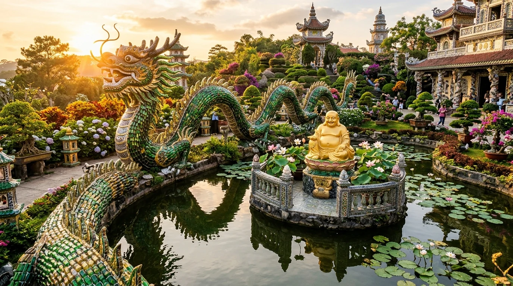

🧭 1. Tổng Quan Chùa Linh Phước — Nghệ Thuật Khảm Sành Sứ Độc Nhất Xứ Ngàn Hoa
Ngôi chùa được khởi công xây dựng vào năm 1949 và hoàn thành năm 1952. Đến năm 1990, dưới sự chủ trì của Thượng tọa Thích Tâm Vị cùng đông đảo nghệ nhân và Phật tử từ Huế và các tỉnh, chùa bước vào đợt đại trùng tu quy mô lớn: tận dụng hàng triệu mảnh sành, sứ, chén đĩa vỡ để ghép khảm tinh xảo lên từng cây cột, bức tường, đầu đao và tượng rồng — biến vật liệu bình dị thành một công trình nghệ thuật lộng lẫy mang đậm sắc màu cung đình và Phật giáo.
Nổi bật giữa khuôn viên là Linh Tháp 7 tầng cao 37m với quả Đại hồng chung nặng 8.500 kg đúc năm 1999; ngay phía trước tháp là tượng Đức Quán Thế Âm Bồ Tát kết bằng hoa bất tử (thực hiện lần đầu dịp Festival Hoa Đà Lạt 2010 với khoảng 650.000 bông hoa, định kỳ thay mới mỗi 2 năm). Ngoài ra, chùa còn có Long Hoa Viên nổi tiếng với tượng rồng dài 49m khảm từ 12.000 vỏ chai và khu vực mô phỏng nhân quả 18 tầng địa ngục mang thông điệp khuyên người hướng thiện, báo hiếu cha mẹ.
📜 2. Quy Chuẩn Hành Lễ & Ứng Xử Văn Minh Tại Chùa Linh Phước
Chùa Linh Phước đón lượng lớn Phật tử và du khách thập phương mỗi ngày; để giữ trọn sự trang nghiêm nơi thiền môn xứ Đà Lạt, hành giả cần lưu ý:
🏮 3 Quy Chuẩn Khi Chiêm Bái Chùa Linh Phước
👘 Trang Phục Kín Đáo — Không Cậy Gỡ Mảnh Khảm Sành Sứ
Mặc quần áo kín đáo, lịch sự khi vào Chánh điện và Linh Tháp. Tuyệt đối không bẻ, cậy hay chạm mạnh vào các chi tiết khảm sành sứ tinh xảo và hoa bất tử.
🕯️ Dâng Hương Đúng Quy Định — Ghi Điều Ước Thiện Lành
Chỉ thắp hương tại lư hương ngoài sân; khi viết lời cầu nguyện dán lên Đại hồng chung, giữ thái độ thành kính, cầu bình an và hiếu đạo.
🤫 Giữ Trật Tự Khi Tham Quan & Đi Cầu Thang Linh Tháp
Di chuyển trật tự theo hàng khi lên các tầng Linh Tháp hoặc tham quan khu vực trưng bày cổ vật và 18 tầng địa ngục; chú ý trẻ nhỏ không chạy nhảy.
⛩️ 3. Lộ Trình 6 Trạm Chiêm Bái Chùa Linh Phước (Trại Mát, Đà Lạt)
Lộ trình 6 trạm đưa hành giả từ Long Hoa Viên với tượng rồng dài 49m, đảnh lễ tượng Quán Thế Âm kết từ 650.000 bông hoa bất tử, chiêm bái Chánh điện khảm sành sứ lộng lẫy, bước lên Linh Tháp 7 tầng cao 37m & Đại hồng chung 8,5 tấn, quán chiếu luật nhân quả tại khu 18 tầng địa ngục và hồi hướng giữa khí trời cao nguyên.
Hành Trình Chiêm Bái Chùa Linh Phước — Kiệt Tác Trại Mát Đà Lạt
Chiêm ngưỡng nghệ thuật khảm sành sứ tinh xảo, đảnh lễ Quan Âm hoa bất tử và lắng nghe âm vang Đại hồng chung 8,5 tấn giữa cao nguyên sương mờ.

Ngay khi bước vào khuôn viên Chùa Linh Phước, hành giả choáng ngợp trước Long Hoa Viên với pho tượng rồng uốn lượn dài 49m bao quanh tượng Phật Di Lặc — toàn thân rồng được nghệ nhân ghép tỉ mỉ từ 12.000 vỏ chai bia tạo nên sắc xanh óng ánh dưới nắng cao nguyên.
🎨 Nghệ Thuật Khảm Sành Sứ Độc Bản
- Từ năm 1990, Thượng tọa Thích Tâm Vị và các nghệ nhân đã khơi nguồn phong cách khảm sành sứ lấy cảm hứng từ nghệ thuật khảm sành cung đình Huế.
- Tượng rồng dài 49m uốn lượn mềm mại bên hồ nước Long Hoa Viên là một trong những biểu tượng dễ nhận biết nhất của Đà Lạt.
- Mỗi mảnh vỡ được gọt giũa, ghép nối tỉ mỉ thể hiện tinh thần kiên nhẫn và tâm huyết của người thợ thủ công Việt.
📿 Nghi Thức Nhập Môn
- Chỉnh trang y phục gọn gàng, bước vào khuôn viên nhẹ nhàng.
- Không trèo lên thành hồ hay chạm vào thân rồng khảm chai.
- Giữ vệ sinh chung quanh khu vực Long Hoa Viên.
CHỨNG NHẬN CHIÊM BÁI CHÙA LINH PHƯỚC VIÊN MÃN
Chúc mừng bạn đã hoàn thành trọn vẹn lộ trình chiêm bái 6 trạm tại Chùa Linh Phước (Đà Lạt). Nguyện cầu Đức Quán Thế Âm Bồ Tát và Chư Phật gia hộ thân tâm an lạc, gia đạo hiếu thuận, đời sống bình yên.
🧭 4. Lịch Trình 1 Ngày Đi Tàu Cổ Trại Mát — Chùa Linh Phước — Đồi Chè Cầu Đất
Chùa Linh Phước nằm ngay cung đường đẹp nhất phía Đông Đà Lạt, có thể trải nghiệm tuyến tàu hỏa du lịch cổ cực kỳ ấn tượng:
Buổi Sáng (07h30 – 11h00): Tàu Hỏa Cổ Ga Đà Lạt → Trại Mát & Chiêm Bái 6 Trạm
- 07h30: Lên chuyến tàu hỏa cổ tại Ga Đà Lạt đi xuyên qua những vườn rau và nhà kính tuyệt đẹp tới Ga Trại Mát (~25 phút).
- 08h15: Tản bộ vài phút tới Chùa Linh Phước, chiêm bái Long Hoa Viên, Tượng Quan Âm hoa bất tử, Chánh điện khảm sứ và Linh Tháp 37m.
- 10h00: Tham quan tầng hầm giáo dục nhân quả và ngắm toàn cảnh Trại Mát từ sân chùa.
Buổi Trưa (11h30 – 13h30): Ẩm Thực Chay & Nông Sản Tươi Đà Lạt
Thưởng thức bữa cơm chay nóng hổi thanh đạm giữa tiết trời se lạnh Đà Lạt cùng rau củ tươi Trại Mát và trà atiso thơm dịu.
Buổi Chiều (14h00 – 17h00): Đồi Chè Cầu Đất & Thưởng Trà Cao Nguyên
- 14h00: Tiếp tục theo Quốc lộ 20 lên Đồi chè Cầu Đất ngắm những triền chè xanh ngát và cánh đồng điện gió.
- 16h30: Quay về trung tâm Đà Lạt đón hoàng hôn bên Hồ Xuân Hương.